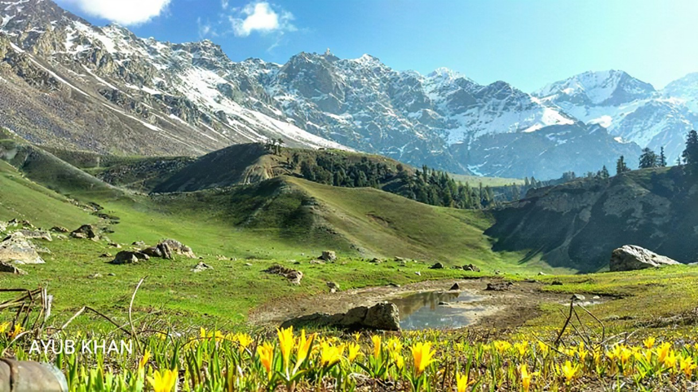

Welcome To My Travel Blog

CHUKAIL BANDA
Welcome to Chukail Banda: Where Nature's Beauty Unfolds. located in the heart of Swat Valley, this enchanting destination is a haven for nature lovers and adventure seekers alike. Surrounded by majestic mountains that touch the sky, Chukail Banda beckons you to explore its pristine landscapes, lush meadows, and crystal-clear streams. Whether you're a trekking enthusiast, a photographer in search of the perfect shot, or simply seeking tranquility in the lap of nature, Chukail Banda offers an experience like no other. Join us on a journey to discover the serenity and majesty of Swat Valley's hidden gem – Chukail Banda.